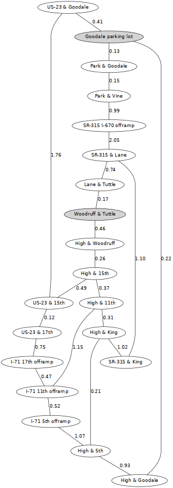
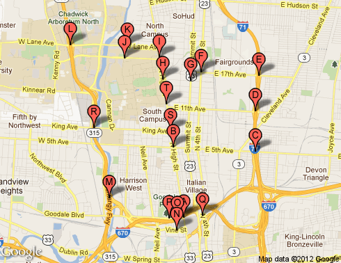
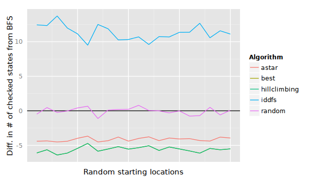
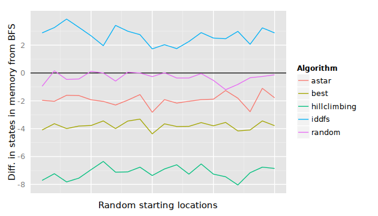
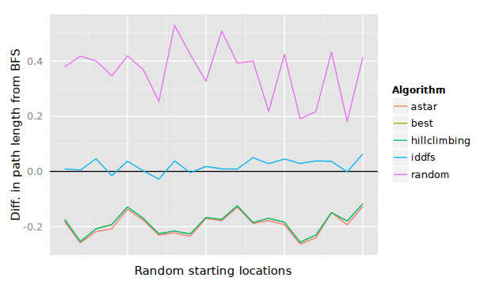
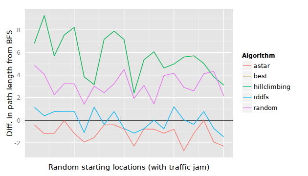

Practice with searching
Table of Contents
Routing from Dreese Labs to Goodale Park
In this example, our goal is to find a route between Woodruff & Tuttle and the Goodale parking lot. The graph on the right shows how various road intersections connect to each other, and the distance between intersections (in miles).
- Initial state
- Woodruff & Tuttle
- Possible actions
- Every action is the same: drive to another intersection.
- Transition model
- Shown in the graph and the table; each intersection can access the other intersections which are linked in the graph.
- Goal criteria
- Our destination is Goodale parking lot
- Path cost
- Shown in the graph and the table; distance (in miles) to the next intersection.
Map data
This map data is encoded in Java and Python source code if you would like to use it in a program.


| Marker | Start | End | Distance (mi) |
|---|---|---|---|
| A | High & Goodale | Goodale parking lot | 0.22 |
| B | High & 5th | High & Goodale | 0.93 |
| C | I-71 5th offramp | High & 5th | 1.07 |
| D | I-71 11th offramp | I-71 5th offramp | 0.52 |
| E | I-71 17th offramp | I-71 11th offramp | 0.47 |
| F | US-23 & 17th | I-71 17th offramp | 0.75 |
| G | US-23 & 15th | US-23 & 17th | 0.12 |
| H | High & 15th | US-23 & 15th | 0.49 |
| I | High & Woodruff | High & 15th | 0.26 |
| J | Woodruff & Tuttle | High & Woodruff | 0.46 |
| K | Lane & Tuttle | Woodruff & Tuttle | 0.17 |
| L | SR-315 & Lane | Lane & Tuttle | 0.74 |
| M | SR-315 I-670 offramp | SR-315 & Lane | 2.05 |
| N | Park & Vine | SR-315 I-670 offramp | 0.99 |
| O | Park & Goodale | Park & Vine | 0.15 |
| P | Goodale parking lot | Park & Goodale | 0.13 |
| Q | US-23 & Goodale | US-23 & 15th | 1.76 |
| R | SR-315 & King | SR-315 & Lane | 1.10 |
| S | High & King | SR-315 & King | 1.02 |
| T | High & 11th | I-71 11th offramp | 1.15 |
| US-23 & Goodale | Goodale parking lot | 0.41 | |
| High & 15th | High & 11th | 0.37 | |
| High & 11th | High & King | 0.31 | |
| High & King | High & 5th | 0.21 |
Longitude / latitude information
| Location | Lon | Lat |
|---|---|---|
| High & Goodale | -83.00286 | 39.97384 |
| High & 5th | -83.00551 | 39.98710 |
| I-71 5th offramp | -82.98526 | 39.98631 |
| I-71 11th offramp | -82.98519 | 39.99394 |
| I-71 17th offramp | -82.98443 | 40.00072 |
| US-23 & 17th | -82.99865 | 40.00133 |
| US-23 & 15th | -83.00118 | 39.99973 |
| High & 15th | -83.00807 | 40.00007 |
| High & Woodruff | -83.00888 | 40.00409 |
| Woodruff & Tuttle | -83.01748 | 40.00400 |
| Lane & Tuttle | -83.01683 | 40.00631 |
| SR-315 & Lane | -83.03085 | 40.00646 |
| SR-315 I-670 offramp | -83.02120 | 39.97749 |
| Park & Vine | -83.00469 | 39.97147 |
| Park & Goodale | -83.00453 | 39.97362 |
| Goodale parking lot | -83.00649 | 39.97372 |
| US-23 & Goodale | -82.99826 | 39.97423 |
| SR-315 & King | -83.02511 | 39.99084 |
| High & King | -83.00610 | 39.99019 |
| High & 11th | -83.00712 | 39.99528 |
The distance (as the crow flies) from each location to each other is collected in the goodale-distances.txt file.
Here is some Python code for converting two long/lat coordinates into a measure of miles between them:
# from: http://www.johndcook.com/python_longitude_latitude.html import math def dist((long1, lat1), (long2, lat2)): # Convert latitude and longitude to # spherical coordinates in radians. degrees_to_radians = math.pi/180.0 # phi = 90 - latitude phi1 = (90.0 - lat1)*degrees_to_radians phi2 = (90.0 - lat2)*degrees_to_radians # theta = longitude theta1 = long1*degrees_to_radians theta2 = long2*degrees_to_radians # Compute spherical distance from spherical coordinates. # For two locations in spherical coordinates # (1, theta, phi) and (1, theta, phi) # cosine( arc length ) = # sin phi sin phi' cos(theta-theta') + cos phi cos phi' # distance = rho * arc length cos = (math.sin(phi1)*math.sin(phi2)*math.cos(theta1 - theta2) + math.cos(phi1)*math.cos(phi2)) arc = math.acos( cos ) # Remember to multiply arc by the radius of the earth # in your favorite set of units to get length. return (arc * 3960.0)
Comparison of searches
Number of checked states (time)

Maximum number of states in memory

Length of path (goodness of solutions)

Let's introduce an anomaly
Suppose we change the distance from High & 15th to High & 11th to 37 miles (originally was 0.37 miles). This modification is a proxy for a traffic jam between these two intersections or some other similar unplanned situation. A* will account for this change because its heuristic is the composite heuristic \(f(s) = g(s) + h(s)\), which means that \(f\) accounts for both the estimated distance \(h\) between High & 15th and High & 11th ("as the crow flies"), and the cost \(g\) of traveling that distance (the traffic jam is accounted for here).
Best-first search, on the other hand (and hill-climbing for that matter) do not take into account \(g\), so they do not plan for the traffic jam; they only plan for the "as the crow flies" distance. Thus, best-first and hill-climbing will travel across this jammed route and their solution cost will suffer as a result.
